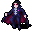

ヴァンパイアの吸血 Vampiric Draining
英語版 CrawlWiki の記事「Vampiric Draining」(0.32 向け、2025-01-23 版)の翻訳です。原文の著者は編集履歴をご覧ください。
この記事は 0.32 の時点の内容で、最新の 0.34 とは違うところがあるかもしれません。
| | |
|---|---|
| レベル | 3 |
| 系統1 | 死霊術 |
| 入手元 | 二元の魔法書 死霊術の魔法書 |
| 詠唱の騒音 | 3 |
| 呪文の騒音 | 0 |
| 威力の上限 | 100 |
| 射程 | 1 |
| 嫌う神 | エリヴィロン 輝けるもの ジン |
| フラグ | 方向・対象指定(Dir or target)、自分は対象外(Not self) |
| 隣接する生き物の生命を奪い、術者に与える。 |
ヴァンパイアの吸血はレベル3の死霊術の呪文だ。隣にいるモンスターに負のエネルギーのダメージを与え、与えたダメージの半分だけあなたを回復する。効き目があるのは生物か植物のモンスターだけで、構造物や生命の守りを持つモンスターに唱えても何も起きない。また、一時的な召喚物にも効かない(ただし永続召喚には効く!)。
死人使いは最初からこの呪文を呪文ライブラリに持っている。キクバークッグァは信仰心が★1のときにこの呪文を授けることがある。
戦略
- グールや、血の渇いた吸血鬼は、(ほかの方法で回復できないときに)この呪文で回復できる。
- この呪文は近接攻撃の間合いでしか唱えられないことを忘れずに。強いモンスター相手だと、回復する量より受けるダメージのほうが多いことがよくある。とはいえ、だからといって攻撃にこの呪文を使うのをためらう必要はない。
モンスター版
次の敵がヴァンパイアの吸血を唱える。
- e
 闇エルフの死の魔術師(2d20 ダメージ)
闇エルフの死の魔術師(2d20 ダメージ) - V
 ジョリー(2d21 ダメージ)
ジョリー(2d21 ダメージ) - @
 ジョセフィーヌ(2d14 ダメージ)
ジョセフィーヌ(2d14 ダメージ) - V

吸血鬼(2d11 ダメージ) - V
 吸血鬼の騎士(2d15 ダメージ)
吸血鬼の騎士(2d15 ダメージ) - V
 吸血鬼の魔術師(2d14 ダメージ)
吸血鬼の魔術師(2d14 ダメージ)
.png){kind=link}
変更履歴
- 0.28より前は、この呪文で植物から HP を吸い取ることはできなかった。また、呪文の威力の上限は200だった。
- 0.27で、ダメージの式が
2d5 + 1d(power/7)から2d(6 + power/14)に変わった。 - 0.26より前は、この呪文のダメージはプレイヤーが回復できる量で頭打ちになった。そのため、体力が満タンのときには役に立たなかった。また、プレイヤーが回復できるのは、最大 HP と現在の HP の差の半分までだった。
- 0.23より前は、棒切れの蛇や鼠の毛皮のクロークで生まれた一時的なモンスターからも吸い取れた。
- 0.17より前は、アンデッドや悪魔の生き物から吸い取ろうとすると、術者が
2d39/2 + 9の HP のダメージを受けた。透明な悪魔がいるマスにヴァンパイアの吸血を唱えて死ぬこともありえた。 - 0.13より前は、バグのせいで体力を満タンまで回復できなかった。